사고력 + 교과, 함께 자라는 수학
소마 사고력수학의 교구·활동·토론 수업으로 논리력과 창의적 문제해결력을 키우고, 이김 교과 프로그램과 연계해 학교 수업과 내신 기초까지 탄탄히 다집니다. 예비 7세부터 단계별 사고력 커리큘럼으로 수학이 '재미있는 친구'가 되는 첫걸음을 돕습니다.
- 소마 사고력 · 교과 수학 유기적 연계
- 교구·게임·발표 활동 기반 사고력 수업
- 학교 진도 연계 · 공부 습관 형성
광명 일직동 · 광명역 인근
사고력과 교과수학을 함께하는 광명 일직동 프리미엄 수학교육기관 방법이 다르면 결과가 다릅니다.
소마·이김수학학원 대표 원장 | 광명 일직동 프리미엄 수학교육
"수학은 많이 푸는 과목이 아니라, 생각하는 힘을 기르는 과목입니다."
안녕하세요. 소마·이김수학학원 원장 이정아입니다.
모든 학부모님의 바람은 하나로 모입니다.
우리 아이가 수학을 진짜로 이해하고, 스스로 생각하며, 그 힘이 결국 성적으로 증명되는 것.
저 역시 같은 마음으로 매일 학생들을 마주합니다.
단순한 문제풀이 반복이 아닌,
체계적인 개념 이해와 탄탄한 개념 위에 쌓아 올린 깊은 수학적 사고력이
수학 실력의 근간이라 확신합니다.
성적은 시험장에서 갑자기 결정되지 않습니다.
평소의 학습 습관, 개념의 깊이, 시험 대비의 완성도가 비로소 결과를 만듭니다.
이김수학은 학생 한 명 한 명의 이해도를 세심하게 점검하고, 부족한 부분은 될 때까지 보완하며,
학부모님과 성장의 여정을 함께 나누는 교육 파트너가 되겠습니다.
아이의 오늘을 진단하고, 내일을 설계하는 일.
그것이 이김수학이 생각하는 진짜 수학 교육입니다.
소마 사고력수학의 교구·활동·토론 수업으로 논리력과 창의적 문제해결력을 키우고, 이김 교과 프로그램과 연계해 학교 수업과 내신 기초까지 탄탄히 다집니다. 예비 7세부터 단계별 사고력 커리큘럼으로 수학이 '재미있는 친구'가 되는 첫걸음을 돕습니다.
균형 있는 심화와 선행으로 득점력을 키우고, 학교별 출제 분석·오답 관리·생기부 관리까지 체계적으로 설계합니다. 방법이 다르면 결과가 다릅니다. 내신과 수능, 입시를 놓치지 않는 성공적인 내신+입시 완성기관을 지향합니다.
공식 암기가 아닌 '왜?'에서 시작하는 수학. 사고력과 교과의 균형, 원리를 아는 학습을 지향합니다.
모든 이김이의 가능성을 실력으로 바꿉니다. 초등은 사고력의 기초를, 중·고등은 득점력과 입시 완성을 목표로 합니다.
철저하고 꼼꼼한 밀착 관리, 정기적인 학습 피드백. 안 되면 될 때까지 — 학생과 학부모님의 든든한 교육 파트너가 되겠습니다.
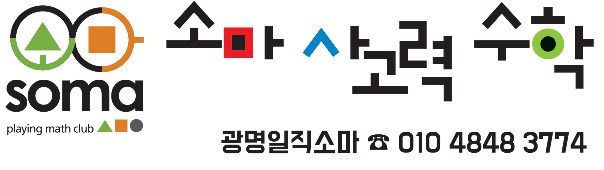
소마 사고력수학 · Playing Math Club
교구·활동 기반 사고력 전문 프로그램
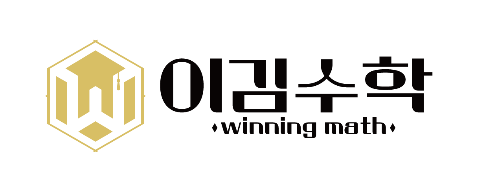
이김수학 · Winning Math
교과·내신·입시 완성 전문 프로그램
소마 이김수학학원은 사고력 수학(SOMA)과 교과 수학(이김수학)을 하나의 학습 여정으로 연결하는 광명 일직동 프리미엄 수학교육기관입니다.
소마 사고력수학은 교구와 게임, 토론·발표 수업을 통해 논리력·창의력·문제해결력을 키우는 사고력 전문 프로그램입니다. 이김수학은 그 사고력 위에 교과 수학을 더해 학교 내신, 고등 수학, 입시까지 이어지는 득점력과 실전력을 완성합니다.
심화와 선행의 균형, 개념 이해 중심 수업, 오답 관리와 개별 피드백 — 대치 소마 사고력수학과 광명 NO.1 이김수학만의 특화된 학습 시스템으로 초등 저학년부터 고등 입시까지 전 학년을 책임집니다.
"성적은 시험장에서 결정되지 않습니다.
평소의 학습 습관과 시험 대비 방식이
결과를 만들어냅니다."
문제 해결력과 논리적 사고
내신·수능 완벽 대비
아이의 성장 단계에 맞는 최적의 학습 로드맵을 제시합니다.
각 과정의 학습 모습 보기를 눌러 실제 수업 현장을 확인하세요.
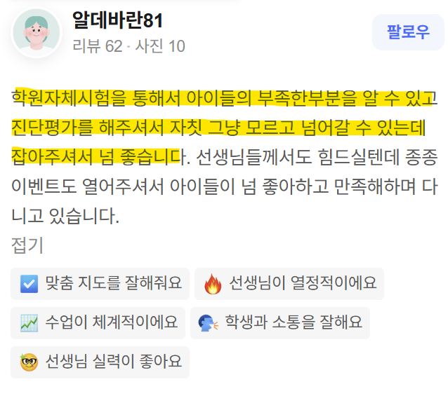
연산보다 중요한 사고력! 수학이 재미있는 친구가 되는 첫걸음. 예비 7세반부터 체계적으로 사고력을 키웁니다.
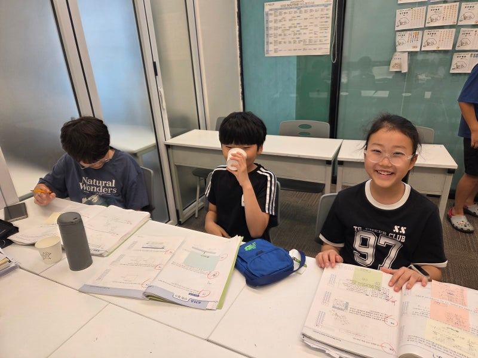
학교 수업과 연계한 개념 이해와 응용력 강화. 공부 습관 형성과 자기주도 학습의 기초를 다집니다.
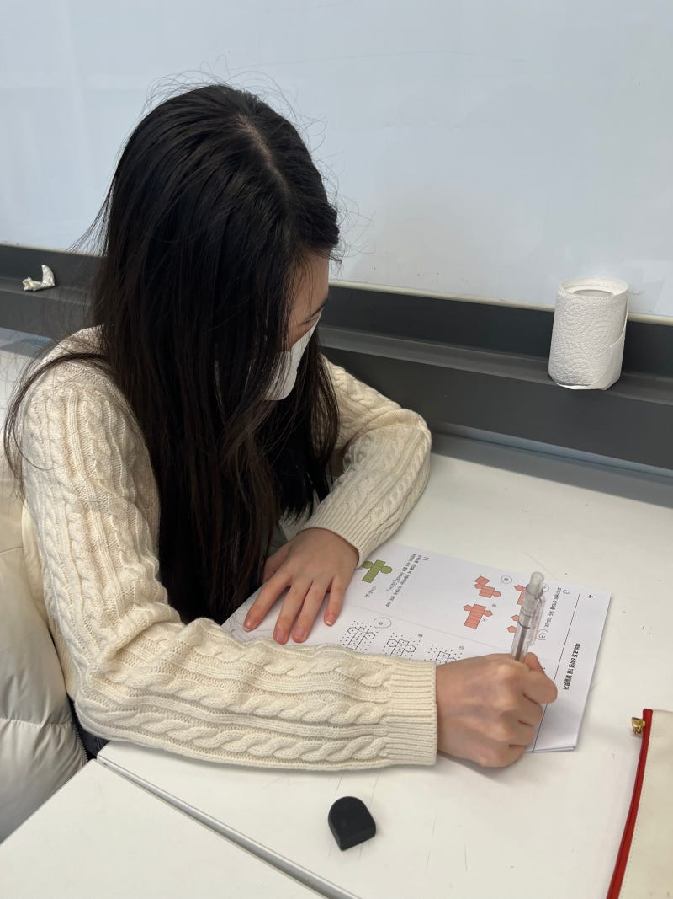
중학교 적응부터 내신 완벽 대비까지. 예비 중학생 맞춤 가이드와 고교 선택 전략도 함께 제공합니다.
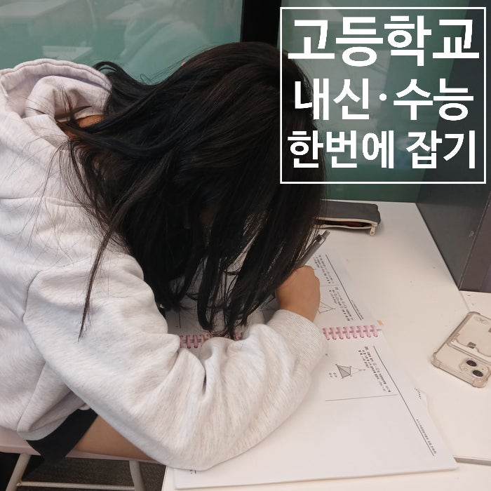
내신과 수능을 놓치지 않는 고등 수학 학습 전략. 예비 고1 골든타임 프로그램과 생기부 관리까지.
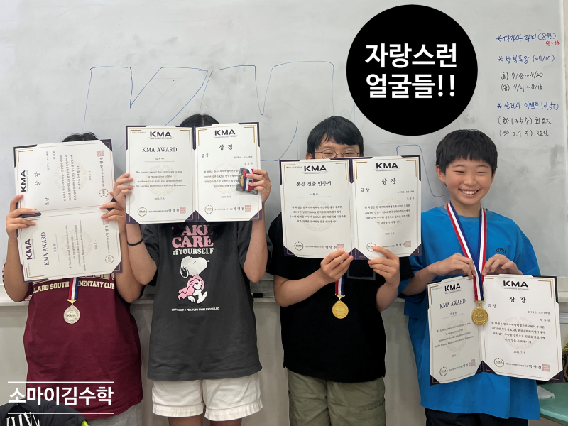
수학경시대회 대비 특강과 영재교육 프로그램. 사고력 기반의 심화 학습으로 경쟁력을 키웁니다.
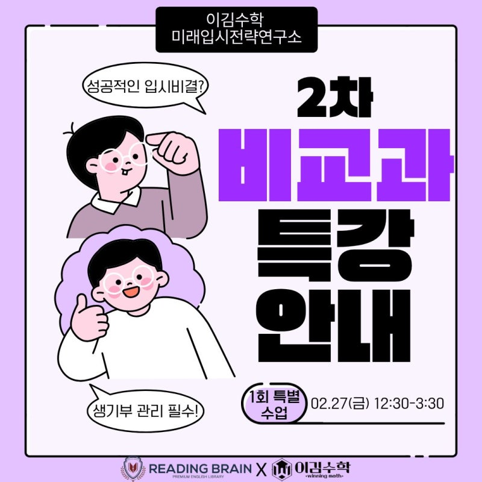
고교학점제 대비, 특목·자사고 준비, 고등학교 선택 설명회 등 입시 전략을 체계적으로 안내합니다.
소마 사고력 프로그램과 이김 교과 수학이 유기적으로 연결되어, 개념 이해부터 심화 응용까지 완성합니다.
입시 전문관과 영재교육관을 분리 운영하여, 학생의 목표와 수준에 맞는 최적의 학습 환경을 제공합니다.
소수 정예 수업과 개별 학습 관리로 아이의 성장을 꼼꼼히 추적합니다. 학부모님과의 소통도 활발합니다.
설명회, 특강, 시즌 이벤트 등 다양한 활동으로 수학 학습에 대한 동기와 자신감을 키워줍니다.
목표에 따라 최적화된 공간에서 집중 학습
경기도 광명시 양달로10번길 7-7 1층
경기도 광명시 양달로20번길 6 1층
수업, 이벤트, 특강 등 우리 이김이들의 생생한 일상
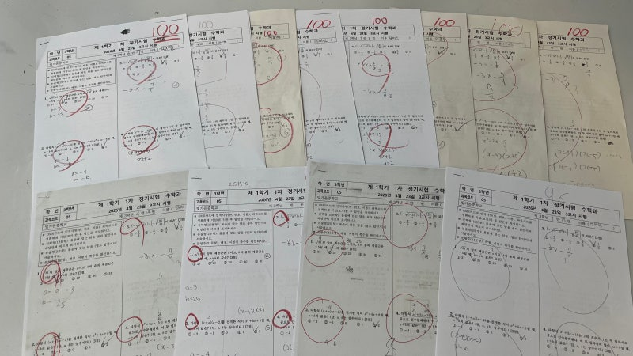
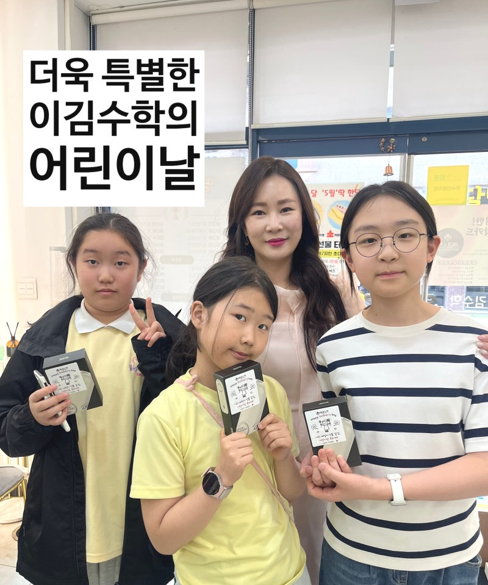
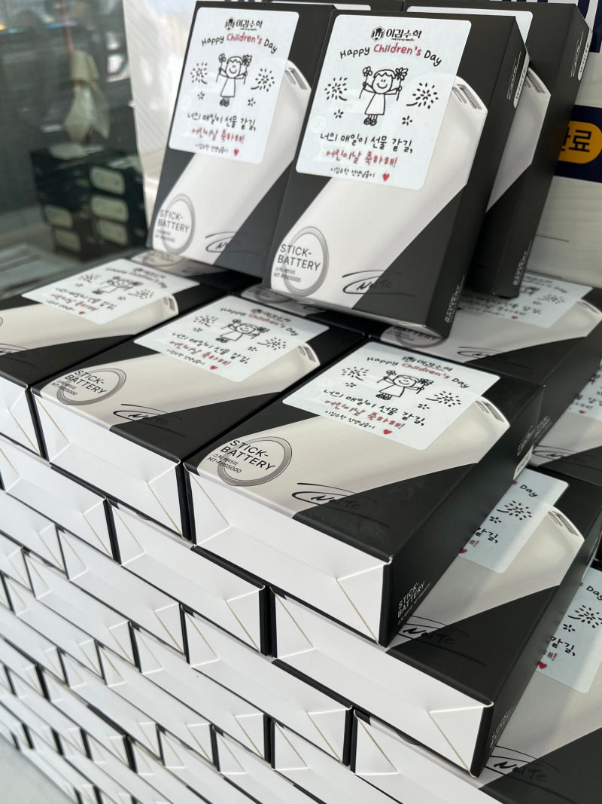
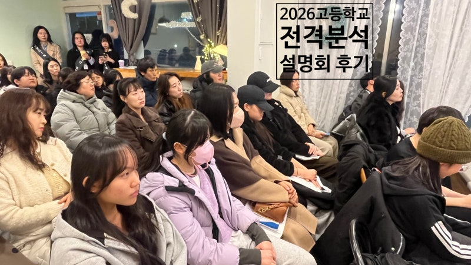
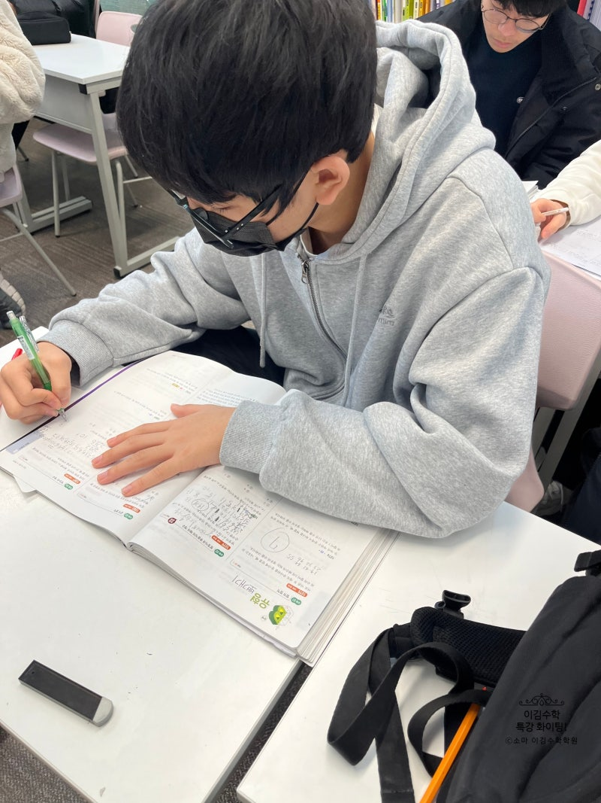
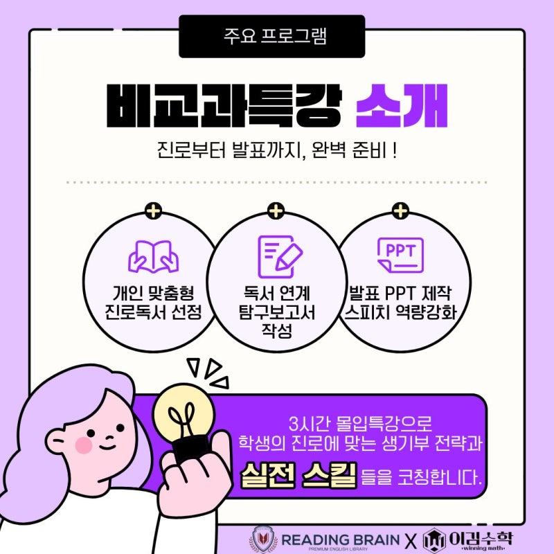
사진 출처: 소마 이김수학 네이버 블로그 · 더 많은 소식도 블로그에서 확인하세요.
재원 학부모님들께서 가장 많이 말씀해 주신 이야기를 모았습니다.
"연산만 시키는 학원이 아니라, 아이가 스스로 생각하는 법을 가르쳐 주셔서 수학에 대한 자신감이 눈에 띄게 달라졌어요."
"소마 사고력 교구 수업과 교과 수업을 함께 하니 확실히 다르더라고요. 아이 표정이 밝아지고 수학 시간을 기다리게 됐습니다."
"틀린 문제를 그냥 넘기지 않고 오답 클리닉까지 챙겨 주셔서 스스로 복습하는 습관이 생겼어요. 학습 현황을 정기적으로 알려주시는 것도 큰 신뢰가 됩니다."
"고교 선택 설명회 덕분에 막연했던 입시 방향이 선명해졌습니다. 단순 학원이 아닌 교육 파트너라는 느낌이에요."
"학교별 내신 출제 경향을 분석해 주시고 시험 전 방향을 잡아 주셔서 중간고사에서 큰 도움이 됐어요. 성적 관리가 체계적입니다."
"내신과 수능을 동시에 챙기는 전략이 체계적이에요. 아이가 매일 학원 가는 걸 즐거워하는 게 가장 큰 만족입니다."
더 많은 후기는 네이버 플레이스에서 확인하실 수 있습니다.
학년과 수준에 맞는 맞춤 학습 상담을 받아보세요.
현재 무료 수준 진단 테스트를 진행하고 있습니다.